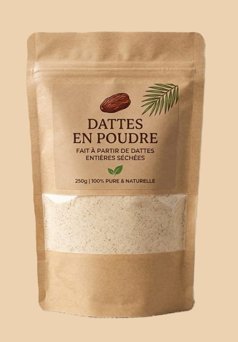
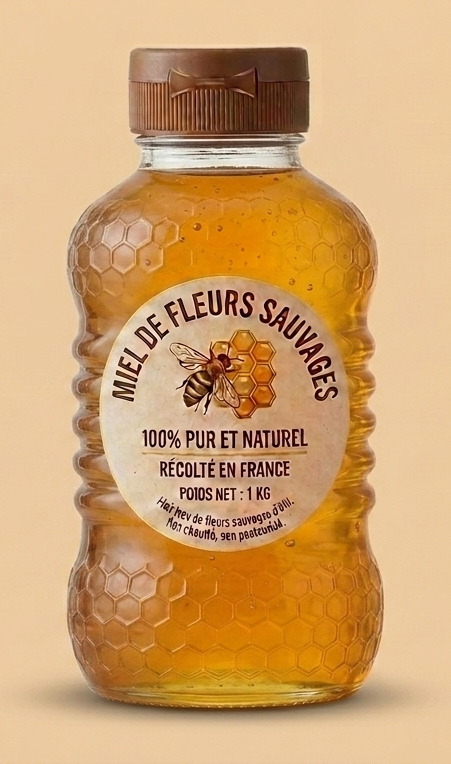
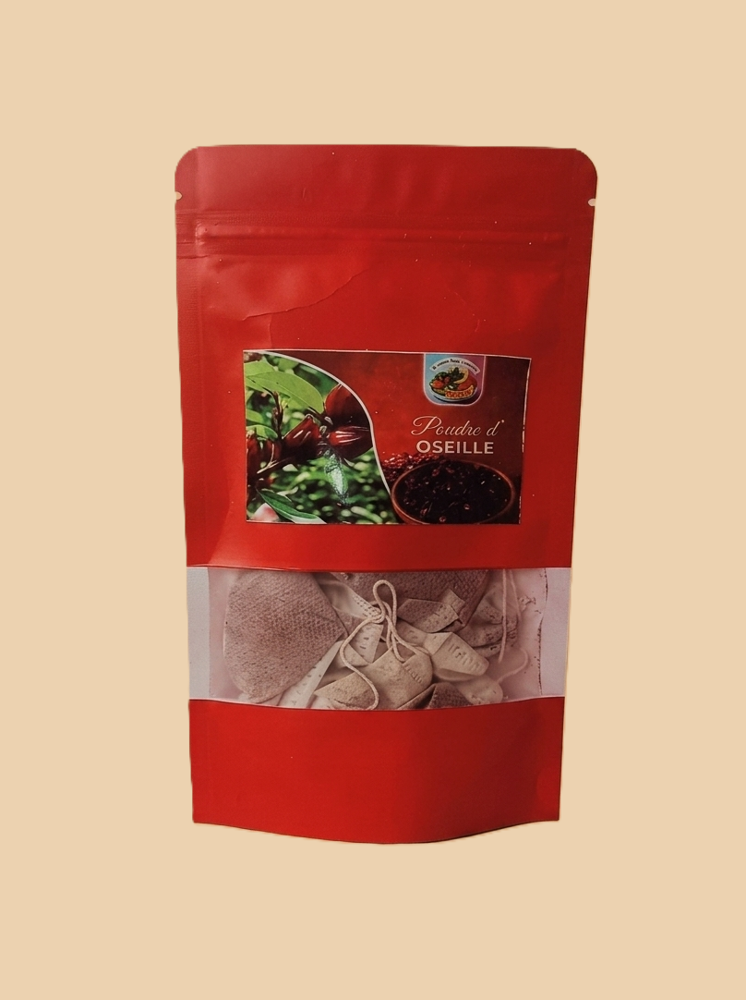
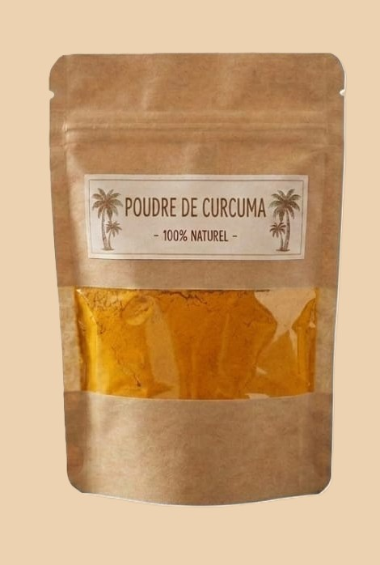
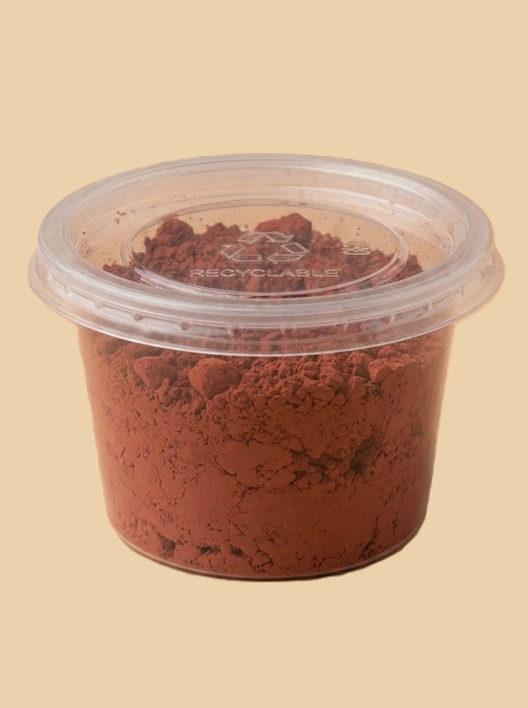

La nature, sans detour,
jusqu'a votre table.
Une boutique qui vous sert uniquement des produits de qualites, selectionnes avec soins
BOUTIQUE
Nos differents produits

Sachet de Baobab en poudre
Masse:200g
Prix:1000XFA

Sachet de datte en poudre
Masse:50g
Prix:1000XFA

Bouteille de miel
Quantite:1L
Prix:3000XFA

Sachet de tisane de folere
10 tisanes
Prix:1000XFA

Sachet de Curcuma en poudre
Masse:50g
Prix:1000XFA

Boite de piment en poudre
Masse:50g
Prix:650XFA
Votre Commande
Nombre d'articles : 0
Montant Total : 0 XFA
Informations de livraison
NB: L'expedition ou la livraison se font aux frais du client.Pour les expeditions le paiement se fait a l'avance.
A propos de nous
MHAL est une entreprise qui fait dans la production et la vente d'aliments naturels bases au Cameroun a Yaounde .Elles tient a resoudre un probleme important: la consommation d'aliments de mauvaise qualité ou bourre de produits chimiques nocif a longterme pour notre organisme.Nous mettons un grand engouement quant a la qualité des produits fabriqués puis vendus
Comment nous procedons?
- Pour la fabrications des produits
- Pour la distribution de nos produits
Nous trions les meilleurs produits pris dans les 4 coins du Cameroun, cultives et conserves soignesement pour vous satisfaire.Les operations de transformation en poudre se font sans ajout de produit chimique et dans le respect des regles d'hygiene et de salubrite.
Nous livrons dans tous Yaoundé et expedions dans les grandes villes du pays et en Europe(Zone de UE). NB: L'expedition se fait sur les frais du client
Malheuresement nous n'avons pas encore d'espace de vente physique.